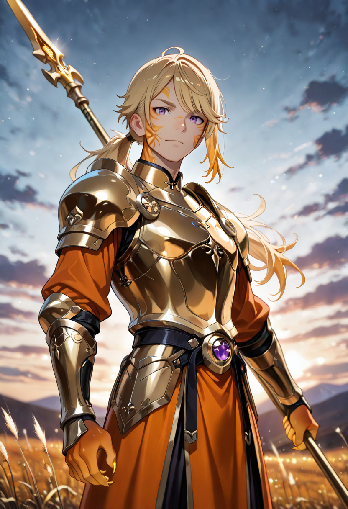
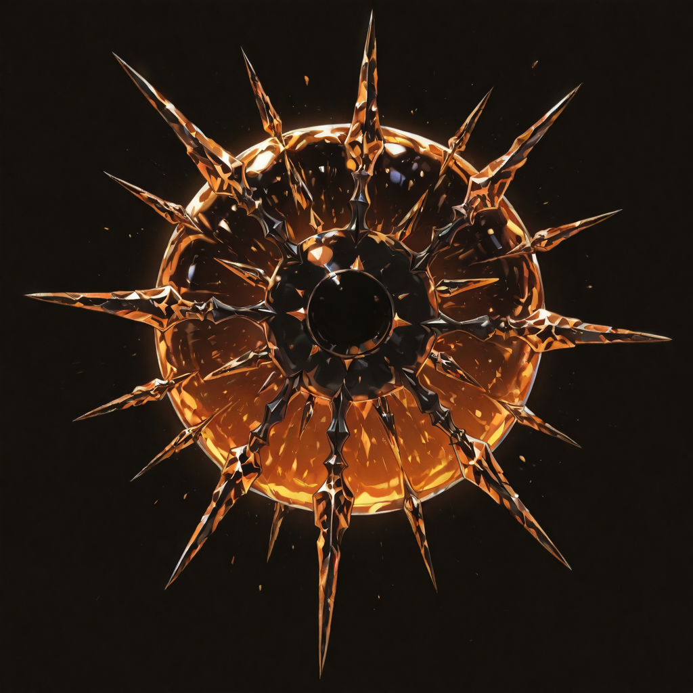
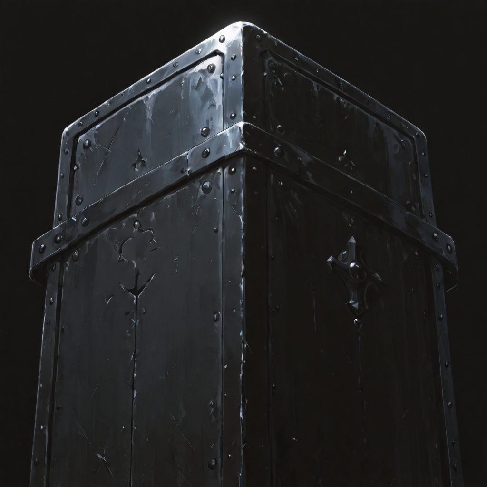
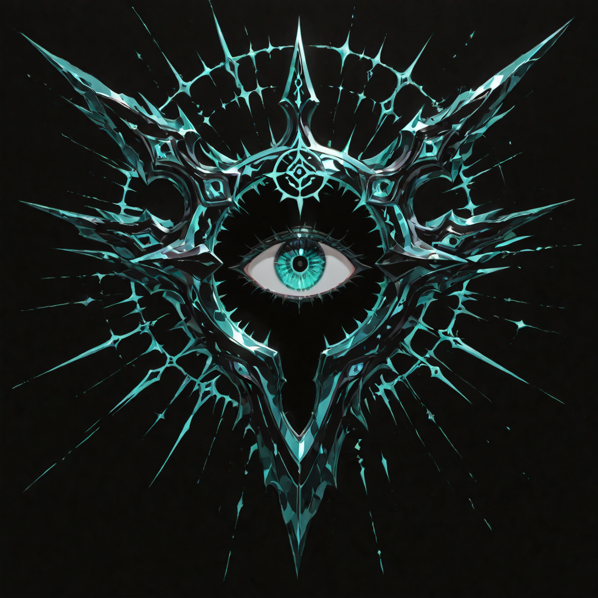
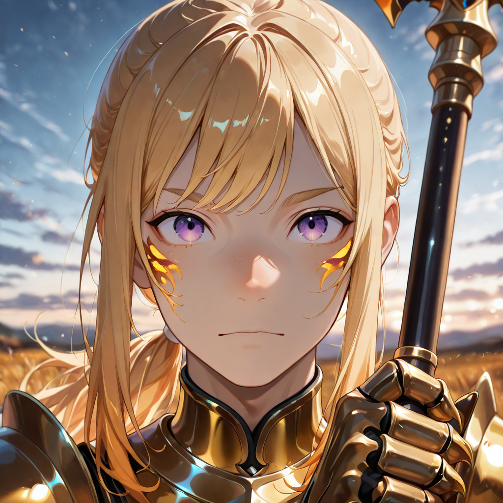
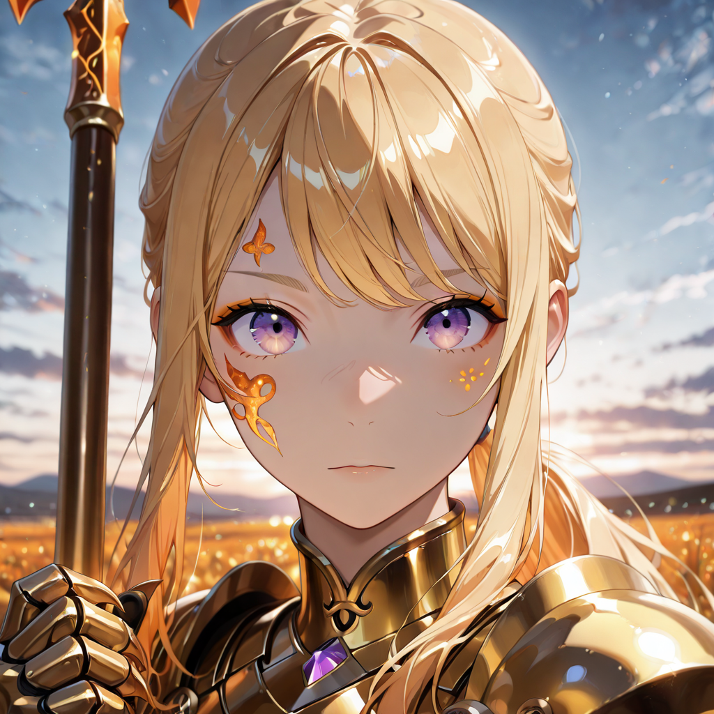

Law That Stays
The Justiciars were enforcement officers in the old empire before its fall , not soldiers, but the bodies of the legal system that went into the field when a legal system needed physical expression. They served writs. They maintained order at borders. They stopped things that needed stopping, using proportional force first and whatever followed proportional force if required. They understood legal authority as a physical posture, and they held that posture for thirty years each, on average, before dying in the line of it.
In undeath they find that the standards of the old legal system no longer apply , there is no law to enforce, no writs to serve, no territory that recognizes their authority. What remains is the posture itself: the way of standing that communicates this far, no further, and the training to back it up. Malicott finds this useful. The Sentinelle find it stabilizing. Having a Justiciar in the formation is like having a wall that occasionally points where the wall should be positioned.
They are the backbone of the Custodian path's protective function , more mobile than the T4 Valkyrie Lancer but less individually powerful, compensating with an ability to cover multiple formation members simultaneously and an almost aesthetic distaste for being moved from a position they have committed to holding.
Tactical Data

Enforcement Round
Base
Zone Suppression
Active
Amber Sightline
PassiveGallery

